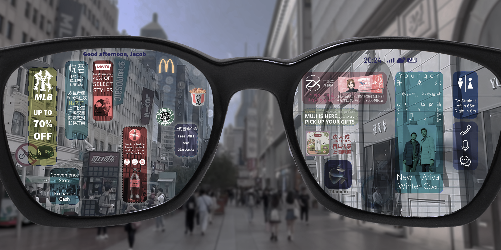
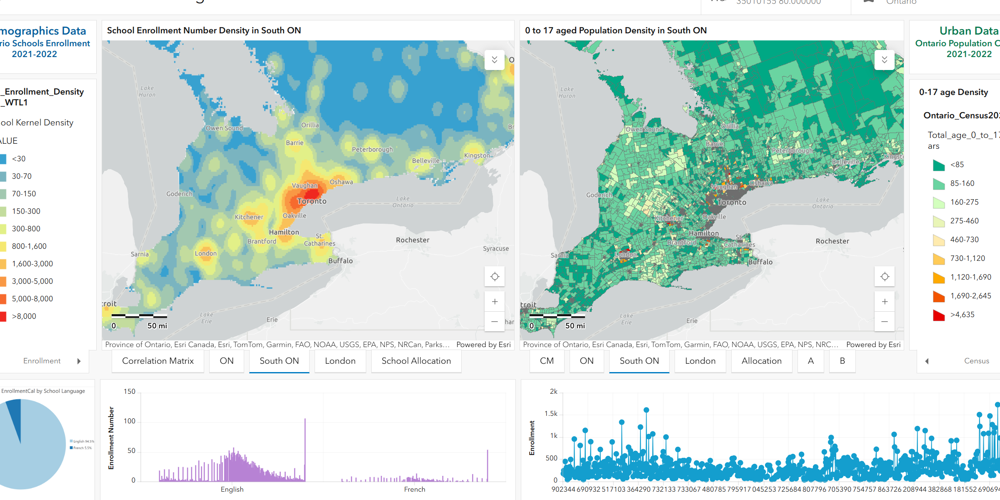
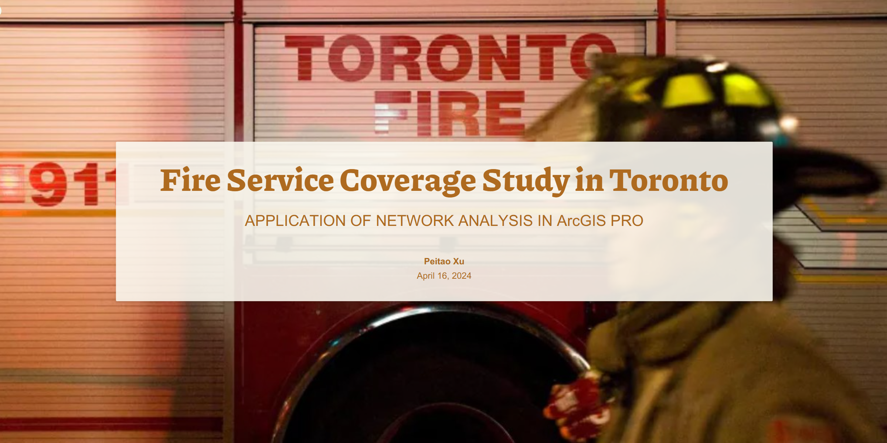
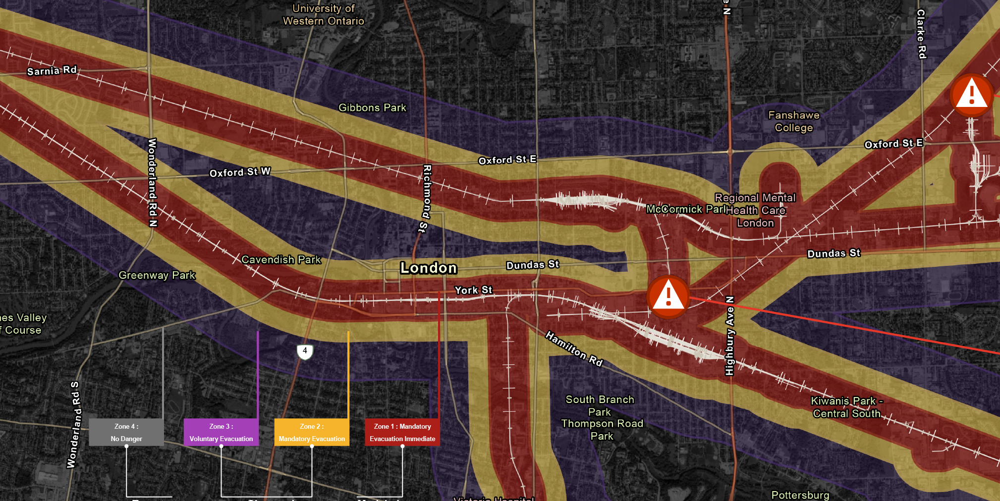
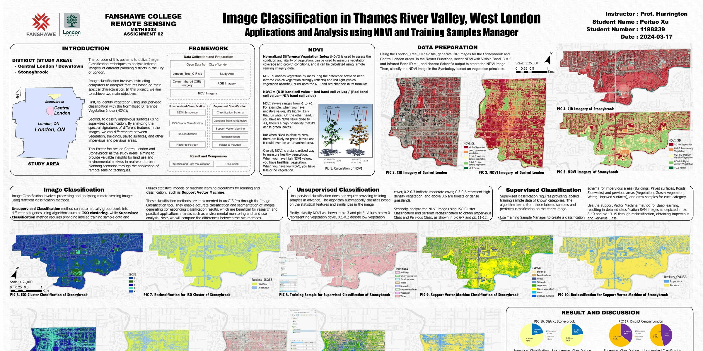
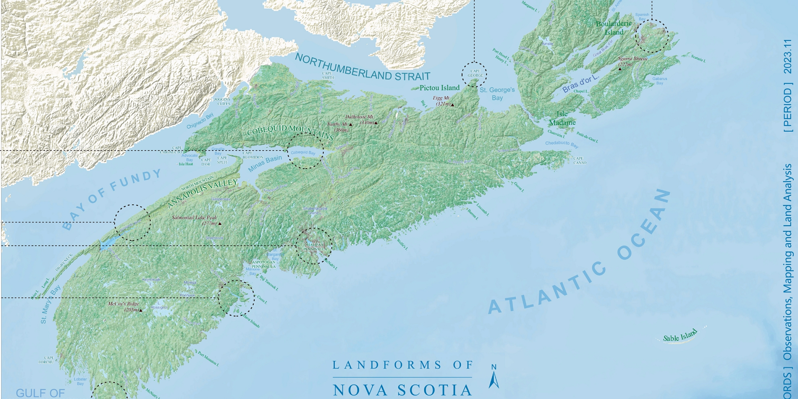
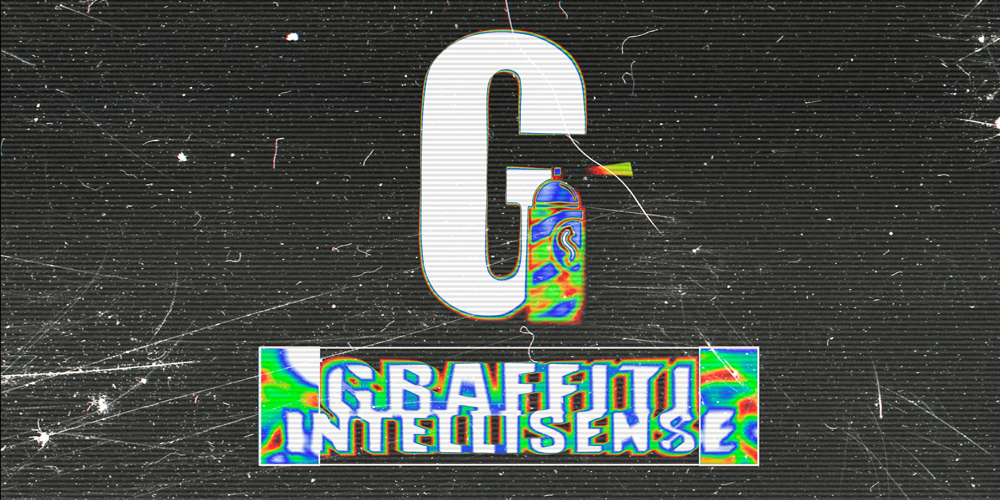

Research
Signboard Lens in Urban Streets
Geospatial and text analysis exploring signboards and urban activity.
View projectSELECTED WORK / 專案作品
Selected work in geospatial analysis, data workflows and the built environment.
01 / DATA
02 / GEOSPATIAL

Dashboard
School zones and enrolment patterns presented in an interactive ArcGIS dashboard.
View dashboard
StoryMap
A spatial study of fire service coverage, presented as an ArcGIS StoryMap.
View StoryMap
GIS toolbox
GIS tools for exploring evacuation planning around railway incidents.
View project
Raster analysis
A raster-based study of the Thames River Valley, presented as an academic poster.
View project
Cartography
A cartographic exploration of the landforms of Nova Scotia.
View project
WebGIS
A WebGIS project for exploring graffiti in urban spaces.
View project03 / ENGINEERING
04 / DIGITAL CONSTRUCTION